<html>
<head>
<title></title>
<meta name="viewport" content="width=device-width, initial-scale=1">
</head>
<body>
<h1 id="lab-2-importing-code-into-vitis-model-composer">Lab 2: Importing Code into Vitis Model Composer</h1>
<html>    
<script>
function myFunction() {

var path = document.location.pathname;
var directory1 = path.substring(path.indexOf('/'), path.lastIndexOf('/'));
var directory = directory1.substring(directory1.lastIndexOf('/')+1); 

commandURI="matlab:XmcExampleApi.changeDirectory('" + directory + "');"

document.location=commandURI
}
</script>
<noscript>Sorry, your browser does not support JavaScript!</noscript>
       
<button type="button" style="background-color:#d0d028; font-size: 20px;" onclick="myFunction()">Open Lab Directory</button>  
              
</html>
<p>Vitis Model Composer lets you import Vitis™ HLS library functions and user C/C++ code as custom blocks to use in your algorithm for both simulation and code generation.</p>
<p>The Library Import feature is a MATLAB function, xmcImportFunction, which lets you specify the required source files and automatically creates an associated block that can be added into a model in Simulink® .</p>
<p>This lab primarily has two parts:</p>
<ul>
<li>In Step 1, you are introduced to the xmcImportFunction function, and walk through an example.</li>
<li>In Step 2, you will learn about the Vitis Model Composer feature that enables you to create custom blocks with function templates</li>
</ul>
<p>For more details and information about other Model Composer features, see the Vitis Model Composer User Guide (UG1483).</p>
<h1 id="step-1-set-up-the-import-function-example">Step 1: Set up the Import Function Example</h1>
<p>In the MATLAB Current Folder panel, navigate to <samp> HLS_Library\Lab2\Section1 </samp> folder.</p>
<ol>
<li>Double-click the <strong>basic<em>array.cpp</strong> and <strong>basic</em>array.h</strong> files to view the source code in the MATLAB Editor.<br />
<br><br> These are the source files for a simple <code>basic_array</code> function in <code>C++</code>, which calculates the sum of two arrays of size 4. <br />
You will import this function as a Vitis Model Composer block using the <code>xmcImportFunction</code> function.<br />
<br><br> The input and output ports for the generated block are determined by the signature of the source function. <br />
Vitis Model Composer identifies arguments specified with the const qualifier as inputs to the block, and all other arguments as outputs.</li>
</ol>
<blockquote>
<p><strong>Note:</strong>  For more details and other options for specifying the direction of the arguments, see the Vitis Model Composer User Guide <br />
(<a href="https://docs.xilinx.com/r/en-US/ug1483-model-composer-sys-gen-user-guide/Overview">UG1483</a>).</p>
<p>❗❗ <strong>Important:</strong>  You can use the <code>const</code> qualifier in the function signature to identify the inputs to the block or use the pragma <code>INPORT</code>.</p>
</blockquote>
<p>&nbsp;&nbsp;&nbsp;&nbsp;&nbsp; In the case of the <code>basic_array function</code>, the <code>in1</code> and <code>in2</code> arguments are identified as inputs.</p>
<pre><code>void basic_array(
uint8_t out1[4], 
const uint8_t in1[4], 
const uint8_t in2[4])
</code></pre>
<ol start="2">
<li><p>To learn how to use the <code>xmcImportFunction</code> function, type <code>help xmcImportFunction</code> at the MATLAB command prompt to view the help text and understand the function signature.</p></li>
<li><p>Open the <code>import_function.m</code> MATLAB script, and fill in the required fields for the <code>xmcImportFunction</code> function in this way:</p></li>
</ol>
<pre><code>xmcImportFunction('basic_array_library', {'basic_array'}, 'basic_array.h', {'basic_array.cpp'}, {});
</code></pre>
<ul>
The information is defined as follows:

<b> Library Name: </b> `basic_array_library`. This is the name of the Simulink library that is created with the new block.

<b> Function Names: </b> `basic_array`. This is the name of the function that you want to import as a block.

<b> Header File: </b> `basic_array.h`. This is the header file for the function.

<b> Source Files: </b> `basic_array.cpp`. This is the source file for the imported function.

<b> Search Paths: </b> This argument is used to specify the search path(s) for header files. In this example, there are no additional search paths to specify and hence you can leave it as { } which indicates none.
</ul>
<blockquote>
<p> <strong>Note:</strong> Look at import<em>function</em>solution.m in the solution folder for the completed version.</p>
</blockquote>
<ol start="4">
<li>Run the <code>import_function.m</code> script from the MATLAB command line:</li>
</ol>
<pre><code>&gt;&gt;run('import_function.m')
</code></pre>
<ul> Notice that a Simulink library model opens up with the generated block `basic_array`.

Save this Simulink library model. </ul>
<ol start="5">
<li><p>Double-click the <strong>basic<em>array</strong> block, and look at the generated interface.<br />
<br><br> The following figure shows the Block Parameters dialog box for <samp> basic</em>array </samp><br />
<br><br> </p></li>
<li><p>Open the <samp> test_array.slx </samp> model, which is just a skeleton to test the generated block.</p></li>
<li><p>Add the generated <samp> basic_array </samp> block into this model, then connect the source and sink blocks.</p></li>
<li><p>Simulate this model and observe the results in the display block.</p></li>
</ol>
<h2 id="step-2-custom-blocks-with-function-templates">Step 2: Custom Blocks with Function Templates</h2>
<p>In this step we will walk through an example to do the following:</p>
<ul>
<li>To create a custom block that supports inputs of different sizes.</li>
<li>To create a custom block that accepts signals with different fixed-point lengths and fractional lengths.</li>
<li>To perform simple arithmetic operations using template variables.</li>
</ul>
<ol>
<li><p>Navigate to the <samp> HLS_Library/Lab2/Section2 </samp> folder and open <strong>design.slx</strong>.</p></li>
<li><p>Double-click the <strong>template_design.h</strong> file to view the source code in the MATLAB Editor. There are two functions: Demux and Mux. These two functions are a demultiplexing and multiplexing of inputs as shown in the following figure.<br />
<br><br>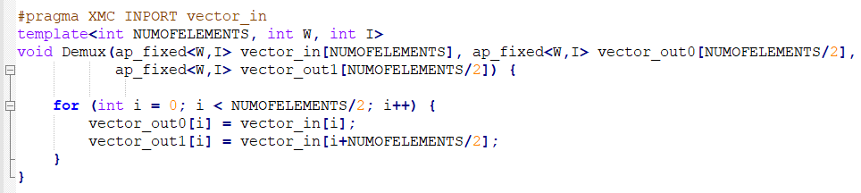</p></li>
<li><p>In the piece of code, note the <code>#pragma XMC INPORT vector_in</code>. This is a way to manually specify port directions using pragmas. Here, we are specifying the function argument <code>vector_in</code> as the input port. Similarly, we can define <code>XMC OUTPORT</code> also.</p></li>
</ol>
<blockquote>
<p> <strong>Note</strong>: For additional information about specifying ports, see Vitis Model Composer User Guide (<a href="https://docs.xilinx.com/access/sources/dita/map?Doc_Version=2022.1%20English&url=ug1483-model-composer-sys-gen-user-guide">UG1483</a>).</p>
</blockquote>
<ol start="4">
<li><p>Notice the use of template before the function declaration. To support the inputs of different sizes, <code>NUMOFELEMENTS</code> is declared as a parameter and used the same while defining an array <code>vector_in</code> as shown in the following figure. This allows you to connect signals of different sizes to the input port of the block.<br />
<br><br></p></li>
<li><p>Notice the template parameters <code>W</code> and <code>I</code> which are declared to accept signals with different word lengths and integer lengths.<br />
<br><br>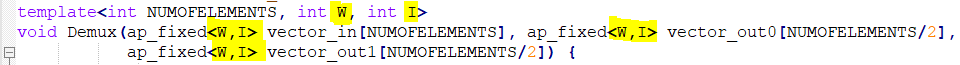</p></li>
<li><p>Observe the arithmetic operations performed using template variables as shown below, indicating the output signal length is half of the input signal length.</p></li>
<li><p>Similar explanation follows for Mux function.<br />
<br><br>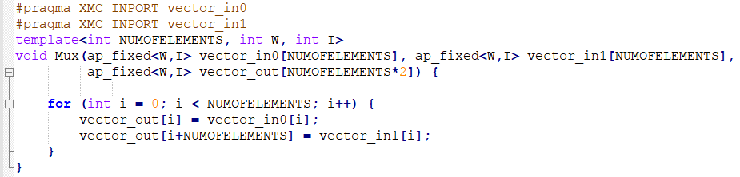<br />
<br><br>Now create the library blocks for Mux and Demux functions using the <code>xmcImportFunction</code> command and complete the design below with custom blocks.<br />
<br><br>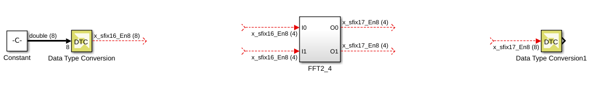</p></li>
<li><p>Double-click the <strong>import_function.m</strong> script file in the MATLAB command window and observe the following commands that generate library blocks to embed into your actual design.</p></li>
</ol>
<pre><code>&gt;&gt;xmcImportFunction('design_lib',{'Demux'},'template_design.h',{},{},'override','unlock')
&gt;&gt;xmcImportFunction('design_lib',{'Mux'},'template_design.h',{},{},'override','unlock')
</code></pre>
<blockquote>
<p> <strong>Note</strong>: The same library is specified for both the functions.</p>
</blockquote>
<ol start="9">
<li>Run the <samp> import_function.m </samp> script from the MATLAB command line:</li>
</ol>
<pre><code>&gt;&gt;run('import_function.m')
</code></pre>
<ol start="10">
<li><p>Observe the generated library blocks in the <samp> design_lib.slx </samp> library model file and save it to working directory.<br />
<br><br>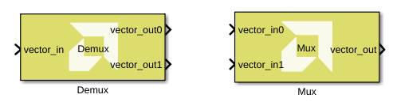</p></li>
<li><p>Copy the Demux and Mux blocks and paste them in the <samp> design.slx </samp> file and connect them as shown in the following figure.<br />
<br><br>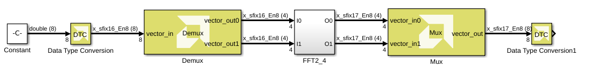</p></li>
<li><p>Note the following after embedding the custom blocks:</p>
<ul>
<li>Double-click the Constant block and observe the vector input of type double. SSR is a workspace variable, initially set to 8 from the initFcn model callback.</li>
<li>Using the Data Type Conversion (DTC) block, double type is converted to fixed type with 16-bit word length and 8-bit fractional length. <br> Input is configurable to any word length since the design is templatized.</li>
<li>Double-click the Demux block and observe the Template parameters section and Dimension column in the Interface section of the function tab.<br><br></li>
<li>Next, double-click the Mux block and observe the Template parameters and Dimension.</li></ul></li>
<li><p>Add a Display block at the input and output as shown in the following figure and simulate the model to observe the results.<br />
<br><br>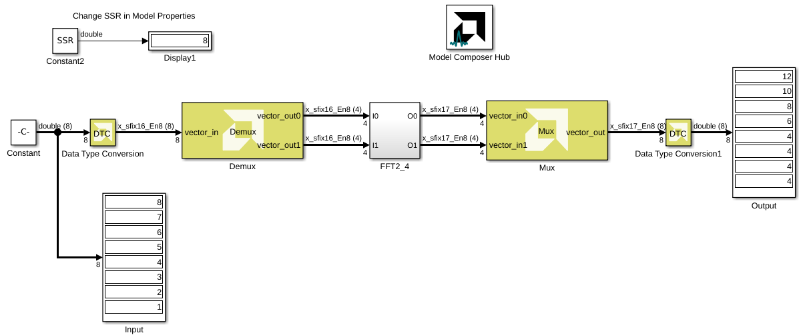</p></li>
<li><p>To understand how templatized inputs add advantage and flexibility to your design, perform the following:</p>
<ul>
<li>Double-click the input <strong>DTC</strong> block.</li>
<li>In the Block Parameters dialog box, change the Word length from 16 to 32.</li>
<li>Change the Fractional length from 8 to 16. <br><br>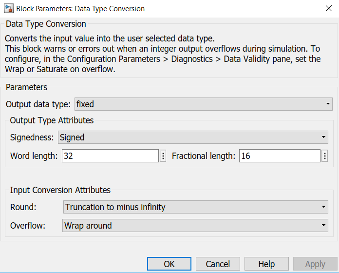</li>
<li>Click <strong>OK</strong> and press <strong>Ctrl+D</strong>. Observe the signal dimensions in the design. <br><br>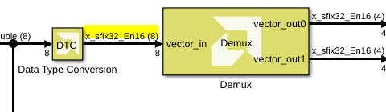<br />
<br><br>To make sure the output is correct, run the simulation and observe that the same block can still be used in a generic way for different values of Word length and Fractional length. This is possible only because we have templatized the W and I values in our C design.</li></ul></li>
<li><p>For an additional understanding of template parameters, perform the following:</p>
<ul>
<li>Right-click the canvas and select <strong>Model Properties</strong>.</li>
<li>In the Model Properties window, click the <strong>Callbacks</strong> tab and select <strong>initFcn</strong> and edit the SSR value from 8 to 16 as shown in the following figure. <br><br>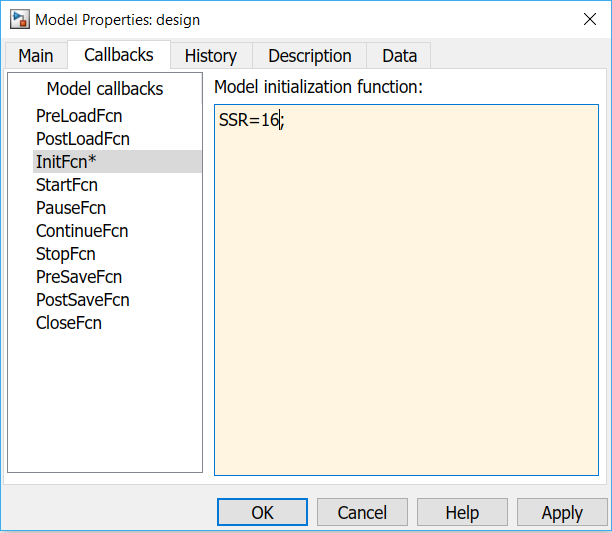</li>
<li>Click <strong>OK</strong> and press <strong>Ctrl+D</strong> to observe the change in the number of elements in the Constant block output vector. The bitwidth changes when we change the datatype on the input DTC. This is possible only because of the template parameter <code>NUMOFELEMENTS</code>. <br><br>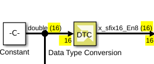</li>
<li>Run the simulation and validate the output according to the input values.</li></ul></li>
</ol>
<h3 id="conclusion">Conclusion</h3>
<p>In this lab, you learned:</p>
<ul>
<li>How to create a custom block using the xmcImportFunction in Vitis Model Composer.</li>
<li>How to create a block that accepts signals with different fixed-point lengths and fractional lengths.</li>
<li>How to use the syntax for using a function template that lets you create a block that accepts a variable signal size or data dimensions.</li>
<li>How to perform simple arithmetic operations using template variables.</li>
</ul>
<blockquote>
<p> <strong>Note</strong>: Current feature support enables you to import code that uses:</p>
<ul>
<li>Vectors and 2D matrices</li>
<li>Floating, integer, and Vitis HLS fixed-point data types</li>
</ul>
</blockquote>
<p>The following solution directory contains the final Vitis Model Composer (<samp> *.slx </samp>) files for this lab.</p>
<ul>
<li><samp> \HLS_Library\Lab2\Section1\solution </samp></li>
<li><samp> \HLS_Library\Lab2\Section2\solution </samp></li>
</ul>
<hr />
<p>Copyright 2022 Xilinx</p>
<p>Licensed under the Apache License, Version 2.0 (the "License");<br />
you may not use this file except in compliance with the License.<br />
You may obtain a copy of the License at</p>
<pre><code>http://www.apache.org/licenses/LICENSE-2.0
</code></pre>
<p>Unless required by applicable law or agreed to in writing, software<br />
distributed under the License is distributed on an "AS IS" BASIS,<br />
WITHOUT WARRANTIES OR CONDITIONS OF ANY KIND, either express or implied.<br />
See the License for the specific language governing permissions and<br />
limitations under the License.</p>

</div>
<style type='text/css'>body {
font: 400 16px/1.5 "Helvetica Neue", Helvetica, Arial, sans-serif;
color: #111;
background-color: #fdfdfd;
-webkit-text-size-adjust: 100%;
-webkit-font-feature-settings: "kern" 1;
-moz-font-feature-settings: "kern" 1;
-o-font-feature-settings: "kern" 1;
font-feature-settings: "kern" 1;
font-kerning: normal;
padding: 30px;
}

@media only screen and (max-width: 600px) {
body {
padding: 5px;
}

body > #content {
padding: 0px 20px 20px 20px !important;
}
}

body > #content {
margin: 0px;
max-width: 900px;
border: 1px solid #e1e4e8;
padding: 10px 40px;
padding-bottom: 20px;
border-radius: 2px;
margin-left: auto;
margin-right: auto;
}

hr {
color: #bbb;
background-color: #bbb;
height: 1px;
flex: 0 1 auto;
margin: 1em 0;
padding: 0;
border: none;
}

/**
* Links
*/
a {
color: #0366d6;
text-decoration: none; }
a:visited {
color: #0366d6; }
a:hover {
color: #0366d6;
text-decoration: underline; }

pre {
background-color: #f6f8fa;
border-radius: 3px;
font-size: 85%;
line-height: 1.45;
overflow: auto;
padding: 16px;
}

/**
* Code blocks
*/

code {
background-color: rgba(27,31,35,.05);
border-radius: 3px;
font-size: 85%;
margin: 0;
word-wrap: break-word;
padding: .2em .4em;
font-family: SFMono-Regular,Consolas,Liberation Mono,Menlo,Courier,monospace;
}

pre > code {
background-color: transparent;
border: 0;
display: inline;
line-height: inherit;
margin: 0;
overflow: visible;
padding: 0;
word-wrap: normal;
font-size: 100%;
}


/**
* Blockquotes
*/
blockquote {
margin-left: 30px;
margin-top: 0px;
margin-bottom: 16px;
border-left-width: 3px;
padding: 0 1em;
color: #828282;
border-left: 3px solid #e8e8e8;
padding-left: 15px;
font-size: 18px;
letter-spacing: -1px;
font-style: italic;
}
blockquote * {
font-style: normal !important;
letter-spacing: 0;
color: #6a737d !important;
}

/**
* Tables
*/
table {
border-spacing: 2px;
display: block;
font-size: 14px;
overflow: auto;
width: 100%;
margin-bottom: 16px;
border-spacing: 0;
border-collapse: collapse;
}

td {
padding: 6px 13px;
border: 1px solid #dfe2e5;
}

th {
font-weight: 600;
padding: 6px 13px;
border: 1px solid #dfe2e5;
}

tr {
background-color: #fff;
border-top: 1px solid #c6cbd1;
}

table tr:nth-child(2n) {
background-color: #f6f8fa;
}

/**
* Others
*/

img {
max-width: 100%;
}

p {
line-height: 24px;
font-weight: 400;
font-size: 16px;
color: #24292e; }

ul {
margin-top: 0; }

li {
color: #24292e;
font-size: 16px;
font-weight: 400;
line-height: 1.5; }

li + li {
margin-top: 0.25em; }

* {
font-family: -apple-system, BlinkMacSystemFont, "Segoe UI", Helvetica, Arial, sans-serif, "Apple Color Emoji", "Segoe UI Emoji", "Segoe UI Symbol";
color: #24292e; }

a:visited {
color: #0366d6; }

h2, h3 {
border-bottom: 1px solid #eaecef;
color: #111;
/* Darker */ }

h1 {
color: black;
border-bottom: 1px solid #eaecef;
}
</style>
</body>
</html>
